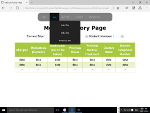
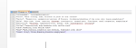
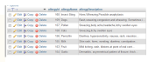
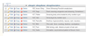

Trip Management Database
As a team, we was tasked by the computing department of Gloucestershire College, to build a Trip Management Database with a web front end and from this my ability and confidence in writing HTML5 with CSS3 improved . We used Xampp which included the use of Apache and MySQL, which when combined creates a theoretical web server. We also used a combination of Flight and Twig, which are tools to render webpages from purely a template, which uses PHP commands and variables to pull in the data from the database and present it using HTML5 and CSS3.
Furthermore, it was from this project, where I learnt a couple of PHP functions to call the data from the database and present it on the web page. I also spent time creating CSV files and learnt a function to push the data into the relevant tables.
Plans and Problems
Throughout any project big or small, communication, cooperation and having a contingency plan is key and we found this out the hard way. For example, we had plans on setting up and implementing a Git Repository. We went to IT support and discussed what we needed done to have and allow access to a Git repository, as at the time the college network was blocking our attempts at downloading sourceTree. In response to what we asked, IT support wasn't very supportive and gave us a name of a piece of software which didn't exist. From that moment on, we decided to use Dropbox, but even Dropbox has issues...
 {kind=link}
{kind=link}
 

{kind=link}